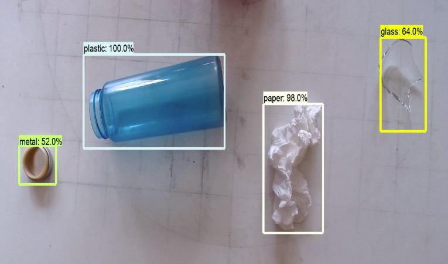

Autonomous waste-sorting robot
A robotic arm that identifies recyclable materials with a neural network and sorts them using inverse kinematics.

Project summary
I designed and built an automated waste sorting system that comprised of a robotic manipulator, powered by an intelligent vision system that leveraged a convolutional neural network to perform the real-time waste classification.
Tools and techniques
• Python • TensorFlow • OpenCV • Inverse Kinematic Modelling.
The Robot Body
• Consisted of a 3-D printed 4DOF robotic arm.
• A single web-camera served as the robot’s vision sensor.
The ‘Brains’
• A convolutional neural network that was trained to detect and classify the five main classes of recyclable waste materials (plastic, paper, metal, cardboard and glass).
• The CNN model was trained using Transfer Learning on the the MobileNet v2 base model architecture.
• Leveraged the TensorFlow and OpenCV frameworks.
